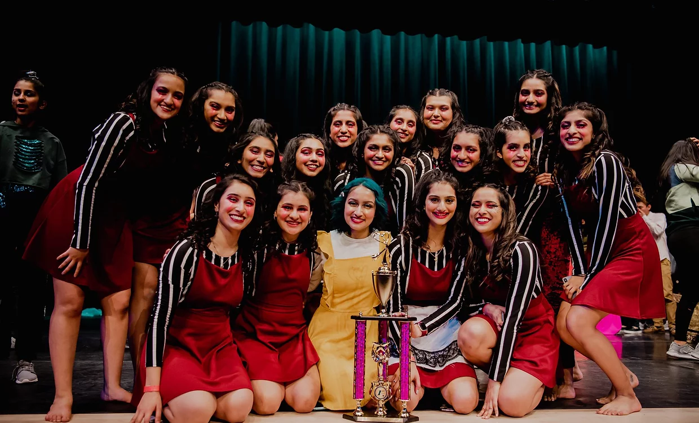
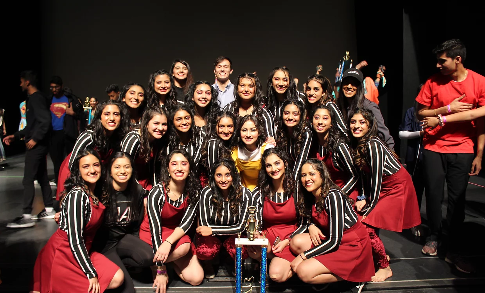
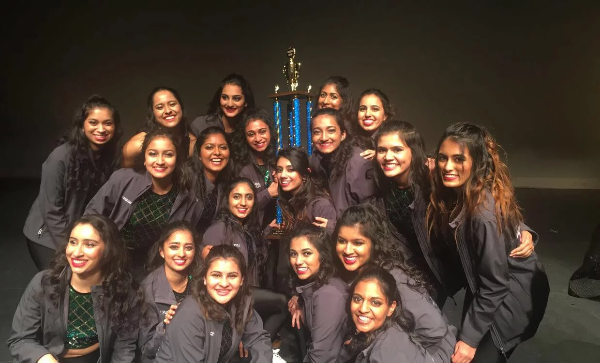

During this competition season, Michigan Taal competed nationally with the theme of "Coraline". This theme describes the story of a young girl, who while exploring her new home discovers a secret door, behind which lies an alternate world that closely mirrors her own but, in many ways, is better. At first, she rejoices in her discovery, until she realizes that her Other Mother is trying to trap her in this new world. Coraline must use all her resources and bravery to make it back to her own family and life. Michigan Taal incorporates themes of family, gratitude, and growing up with this theme. FIRST PLACE Baltimore Dil Se February 15, 2020 Front row: Sarika Mahimkar, Isha Shah, Manisha Dayananda, Ananya Ramanthan, Maya Lawande Second Row: Megha Kunju, Krisha Patel, Sadhana Ramaseshadri, Swathi Srikanthan, Sonali Narayan, Juhi Thomas Last row: Sonia Bhakkad, Madhulika shastry, Sarina Sandhu, Selina Mohanty, Akansha Pandey, Nishka Muzumdar
THIRD PLACE BEST COSTUME BEST THEME Purdue Nasha January 25, 2020 Front Row: Sonia Bhakkad, Janki Patel (alum), Sarika Mahimkar, Selina Mohanty, Ananya Ramanathan, Maya Lawande Second Row: Sarina Sandhu, Isha Shah, Sadhana Ramaseshadri, Swathi Srikanthan, Manisha Dayananda, Nishka Muzumdar, Aarti Mathur, Juhi Thomas Last Row: Megha Kunju, Shivani Gupta, Krisha Patel, Akansha Pandey, Madhulika Shastry, Sonali Narayan, Avani Yaganti (alum)
During this competition season, Michigan Taal competed nationally with the theme of "Future is Female". This theme explores different female icons who have made an impact on this world. It incorporates women from different countries and different points of history, including Cleopatra, Jansi Ki Rani, and Beyonce. The overall story shows how powerful women can be and the impact one individual can make on the world. Second place Purdue Nasha January 25, 2018 Front row: Sarika Mahimkar, Ramya Puranam, Isha Shah, Neha Pareddy, Sanjna Pradhan, Sejal Lal Second Row: Manisha Dayananda, Sabhya Gupta, Kanan Pandey, Medha Sinha, Bhoomika Jain, Richa Patwa, Vidisha Naini Last row: Janki Patel, Maya Lawande, Ananya Ramanathan, Pranita Balusu, Avani Yaganti, Tanvi Deshmukh
